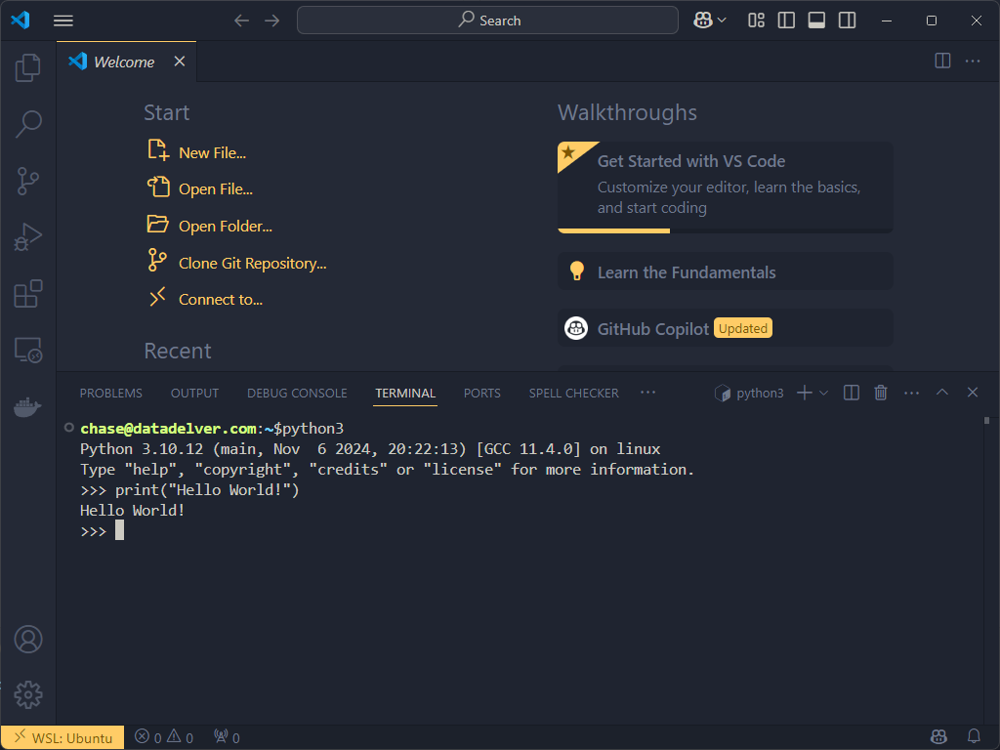
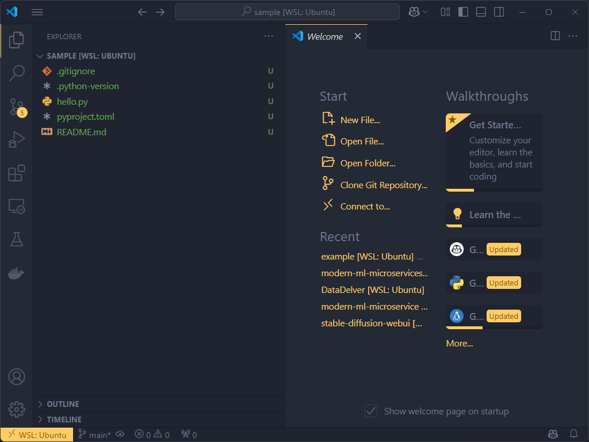
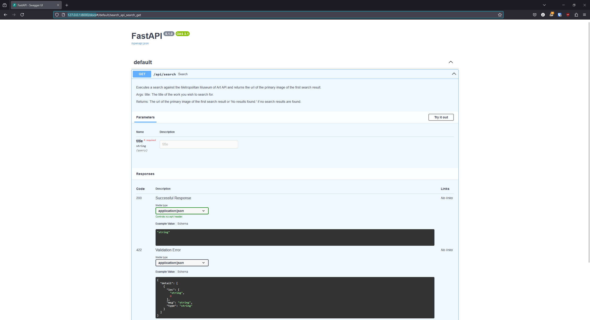

Delve 6: Let's Build a Modern ML Microservice Application - Part 1

"The beginning is the most important part of the work." - Plato
A New Year, A New Start
Hello data delvers! Happy New Year! I hope you all have been well! It's been some time since our last delve (sorry!) but I want to kick off 2025 with a new series of delves I've been wanting to do for some time, building out an ML application using modern microservices principles.
In this multi-part series we'll focus on the tools, techniques, and strategies I use to bring ML applications to life in a maintainable, scalable, and extendable way. If that sounds of interest to you, put on your delving gear and join me as we go deep into the depths of the labyrinth!
ML, Redefining Application Development?
To begin this delve I'm going to start by stating that for part one I am not going to be discussing machine learning at all, only core software engineering principles. "What? How can you talk about building ML applications and not ML at all!" I could hear you say. Firstly, I will talk about ML eventually, however the main point I want to raise here is there is nothing special about ML that invalidates good software engineering practices. I think this is such an important point that I will state it again, repeat with me:
There is nothing special about ML that invalidates good software engineering practices.
This is something I have seen even experienced practitioners get tripped up on. Particularly those that have come from a software engineering background but have never worked with ML before. They join a team, see all the data scientists working in notebooks and see everyone else nodding their heads and working to productionize those notebooks and think "Gee, this doesn't seem to make sense to me but this is what everyone else is doing so it must be right." and go along with the herd. I'm here to say that you are right to feel like something is off.
Historically the data science community has not come from a software engineering background, but one of statistics and analytics. As a result, a whole crop of tools and companies have sprung up to make productionizing their work "easy". Sometimes even advocating for running notebooks in production as "best practice". If you've read my previous delve on the subject you know that this approach is full of pitfalls.
In addition to the above drawbacks, the mentality of "ML is special, it requires a different paradigm to productionize" forces us to ignore all of the wonderful best practices that have developed over the past several decades of software engineering to improve reliability, testability, and extendability (Object Oriented Programming is over 50 years old at this point, I don't think it's going anywhere). As such, instead of asking "How do we modify our software development best practices to accommodate ML?" I prefer to ask opposite question: "How can we develop ML capabilities in a way that can benefit from all the best practices of software engineering?". It is this approach that I intend to begin to explore in this delve.
Preparing the Excavation Site
Hopefully by now I have piqued your interest in this approach, which means we now need to prepare a workspace to begin developing it. The first choice we must make is what operating system to develop on, which is influenced somewhat by our choice of programming language.
As you are probably already aware, Python has become the lingua franca of the Data Science and Machine Learning world. According to the 2024 Stack Overflow Developer Survey, a whopping 51% of respondents stated they work with Python. Compare this to R the other main language used for modeling at only 4.3% and it should be clear Python is currently enjoying a resounding popularity.
While it is possible to develop Python natively on a Windows operating system, it has not been in my experience very pleasant, with most developers preferring either a macOS or Linux environment to develop in. However, if you are on a Windows machine before you go dual-booting your hard drive to install Linux you should definitely consider the Windows Subsystem for Linux (WSL), which allows you to run a full Linux kernel on your Windows machine. This is actually my preferred development setup and the one I will be using for this series.
With the operating system out of the way, the next major choice to make is which Integrated Development Environment (IDE) to choose. For a long time my answer here would have been PyCharm as it was the most feature rich and complete. However, in recent years Visual Studio Code (VSCode) has taken the development world by storm, rising to 73.6% of respondents using it in the same 2024 Stack Overflow Developer Survey. It also has the added benefit of being completely free to use. Given this, I will be using VSCode as my IDE, though most of what we cover should be IDE agnostic.
With that all out of the way, let's boot up VSCode and get to coding!
Except, when you first boot up VSCode it won't be equipped to develop Python. Head over to the extensions tab and grab the official Python Extension from Microsoft and if you are on Windows and want to use WSL, grab the WSL extension too (make sure to check out the extension instructions as to how to open a VSCode instance connected to WSL).
Open up a new Terminal in VSCode a do a quick Python Hello World to verify everything is working as expected:

One thing to note here, there are plenty of good resources out there to learn Python, https://www.learnpython.org is unironically a good one, so for this series I'm going to assume you have some basic Python knowledge already but I'll point out specifics that I find valuable.
Moving in the Digging Equipment
If you've ever worked with Python one thing you probably know already is that managing dependencies is hard! Trying to make sure you have all the right versions of your dependencies installed and they don't conflict with each other has been a recurring challenge in the Python ecosystem. Up until recently, there hasn't be a good tool that manages all of this well. Previously I used a amalgamation of pyenv, pipenv, and some custom setup scripts to manage it all. While this worked it was finicky and brittle. Some other tools like poetry came along but I never really found it compelling enough to switch. That all changed with uv. Simply put, this is the best tool out there, and it does it all: managing different versions of Python on your machine, blazing fast dependency resolution, and distribution packaging to boot. It has easily replaced 5-6 tools in my workflow. Needless to say, I will be using uv for all my projects going forward.
While we are on the same topic of Python tools, the same company that maintains uv also has another tool: Ruff which is great for auto-formatting your python code so that it meets your stylistic standards. This again replaced several tools in my existing workflow and it is available as a VSCode Extension. Not a hard requirement but I highly encourage using it as well. Not having to argue with other engineers on the correct way to style code and just having a tool do it for you has saved me countless headaches.
Finally, you should hopefully already have Git installed on your machine. You are version controlling your code aren't you?
Start Digging
Ok! That should be enough setup for now, let's get coding! Open up a shell and type uv init modern-ml-microservices this will create a new starter project directory for us to work with. You can then open up this directory in VSCode by typing code modern-ml-microservices and we're up and running!

To start let's take a look at the pyproject.toml file. As defined by PEP 621, this file is the modern standard for storing our project configuration. It includes things like what version of python our project is compatible with and what its dependencies are. When starting out there are a few things I like to change like adding your own project description and configuring any tool options:
[project]
name = "modern-ml-microservices"
version = "0.1.0"
description = "Example repository of how to build a modern microservice architecture to support machine learning applications."
readme = "README.md"
requires-python = ">=3.13"
dependencies = []
[tool.ruff]
line-length = 120
[tool.ruff.format]
quote-style = "single"
One of the things I like about Ruff is it has several configuration options that you can adjust to suit your preferences. For example, I like to use single quotes ' for denoting strings in Python and have a max line length of 120 characters. You can tweak these settings to your desire but they should be consistent across your projects and teams.
Next we can work with our Python code directly. We can start by deleting hello.py, we won't be using it. We it comes to managing your source code there are a few different philosophies, however I subscribe to the idea that source code should be kept in a separate directory for project files. This becomes important as the project base grows and the complexity of the code increases. To that end create a directory called src and a file called main.py within it. This we become the main script for our application, but what will our application do?
APIs and Microservices, the Core Tools in your Belt
It used to be in years past, all the features of a application were created in one code base and the application was deployed as a single unit (the so called Monolith architecture). As applications began to grow and their complexities increased the Microservice Architecture Pattern developed to support these more complex applications. The core concept of this architecture are small, independently deployable services each with ownership of a single business capability. The services communicate with each other over the network using APIs and together form the whole application. As we'll come to see, this architecture pattern lends itself very well to the complexities of an ML powered application.
Start Building
For this initial application we are going to be using the free public API provided by the Metropolitan Museum of Art. For or starting task we'd like to search the museum's collection for an artwork and if found, get a link to an image of the artwork.
We can see that this should be possible in the API, we can search the collection using the /public/collection/v1/search route. We can also get the details of a specific object in the collection, including its primary image, using the /public/collection/v1/objects/[objectID] route. However, we can't get all the information we need from a single call. Therefore the business logic we need to create is:
GIVEN: The name of an artwork
WHEN: That artwork is found in the collection
THEN: Get the url to the primary image of the artwork and return it
Sounds simple enough, so then the question becomes how do we make these API calls in our Python code? Again, if you had asked me this question previously I would have said the Requests library was your go to standard for doing this. However recently, the HTTPX library has been gaining steam as a faster, more efficient replacement and is the one I will be using.
Firstly, we need to add this library as a dependency of our project. Fortunately uv makes this easy for use, simply run uv add httpx in your console and make sure to accept the pop up from VSCode to use the created virtual environment for the project.
uv has just simplified a great number of steps for us it has:
- Created a virtual environment for our project with the project's specified version of Python (3.13 in our case) so that all the dependencies of your project stay separate from your system's Python dependencies
- Installed the specified dependency into the newly created virtual environment
- Added the dependency to the project's
pyproject.tomlfile - Created a
uv.lockfile to hold all of that dependency's dependencies.
All that to say, uv is great and that process used to take several different commands with several different tools to pull off.
Now that we have HTTPX installed is pretty easy to write a quick function to handle the desired business logic:
from typing import Optional
import httpx
def search(title: str) -> str:
search_request: httpx.Response = httpx.get(
'https://collectionapi.metmuseum.org/public/collection/v1/search',
params={'q': title, 'title': True, 'hasImages': True},
)
object_ids: Optional[list[int]] = search_request.json().get('objectIDs')
if object_ids:
object_request = httpx.get(f'https://collectionapi.metmuseum.org/public/collection/v1/objects/{object_ids[0]}')
primary_image_url = object_request.json().get('primaryImage')
return primary_image_url
else:
return 'No results found.'
Some things to note about this code, PEP 484 defined type hints for Python, use them! They make your code much more readable and easier to understand. In 2025 there is no excuse not to type hint your Python code! Understanding that this function should take in a string and return one is good to know!
On the subject of documentation for your code, there is one other thing that this function is missing and that is a docstring. Defined by PEP 257, docstrings are Python's way of documenting functions for the developers that come after you (and yourself!). Again, use them! Adding a docstring to this function would look something like this:
def search(title: str) -> str:
"""Executes a search against the Metropolitan Museum of Art API and returns the url of the primary image of the first search result.
Args:
title: The title of the work you wish to search for.
Returns:
The url of the primary image of the first search result or 'No results found.' if no search results are found.
"""
search_request: httpx.Response = httpx.get(
'https://collectionapi.metmuseum.org/public/collection/v1/search',
params={'q': title, 'title': True, 'hasImages': True},
)
object_ids: Optional[list[int]] = search_request.json().get('objectIDs')
if object_ids:
object_request = httpx.get(f'https://collectionapi.metmuseum.org/public/collection/v1/objects/{object_ids[0]}')
primary_image_url = object_request.json().get('primaryImage')
return primary_image_url
else:
return 'No results found.'
Unfortunately, there is no official format for docstrings, with several competing styles out there. I myself prefer the style defined in the Google Python Style Guide, though there are other styles you can use if you wish. The important thing is to pick one and be consistent about it. VSCode conveniently has an extension that will autogenerate this format of docstring for you, as well as several other popular formats.
You'll also want to update your pyproject.toml to let Ruff know which format you are using:
[project]
name = "modern-ml-microservices"
version = "0.1.0"
description = "Example repository of how to build a modern microservice architecture to support machine learning applications."
readme = "README.md"
requires-python = ">=3.13"
dependencies = [
"httpx>=0.28.1"
]
[tool.ruff]
line-length = 120
[tool.ruff.format]
quote-style = "single"
[tool.ruff.lint.pydocstyle]
convention = "google"
We can put this function in our main.py file and load up the python REPL to try it out:
If we search for an artwork that is not currently in the collection we should get our "No results found." message.
And if we search for a work that is currently in the collection we should get the url to that work back:
>>> search('The Death of Socrates')
'https://images.metmuseum.org/CRDImages/cl/original/DP102929.jpg'
Success!
Our code works but how can we expose it so that other parts of our application (services) can use it?
Digging Deeper
The answer is something we've already discussed: Microservices! We can turn our code into a simple service with an API that other services can call to use this functionality. So how do we add an API to our code?
There are a few different libraries we could use: Flask is the tried and true library that is still widely used today. However, (you may be picking up on a theme at this point), FastAPI is a newer, and well faster, library that comes with some quality of life features that I quite like so I'll be using it with this project. Turning our function into an API is as simple as adding 3 lines of code to our main.py file:
from typing import Optional
from fastapi import FastAPI
import httpx
app = FastAPI()
@app.get('/api/search')
def search(title: str) -> str:
"""Executes a search against the Metropolitan Museum of Art API and returns the url of the primary image of the first search result.
Args:
title: The title of the work you wish to search for.
Returns:
The url of the primary image of the first search result or 'No results found.' if no search results are found.
"""
search_request: httpx.Response = httpx.get(
'https://collectionapi.metmuseum.org/public/collection/v1/search',
params={'q': title, 'title': True, 'hasImages': True},
)
object_ids: Optional[list[int]] = search_request.json().get('objectIDs')
if object_ids:
object_request = httpx.get(f'https://collectionapi.metmuseum.org/public/collection/v1/objects/{object_ids[0]}')
primary_image_url = object_request.json().get('primaryImage')
return primary_image_url
else:
return 'No results found.'
What we've done here is told FastAPI that our function will take in a GET request on the route /api/search.
We can test this out ourselves, run your application and then head to http://127.0.0.1:8000/docs in your web browser, you should see something like the below screen:

This is an application known as Swagger and comes pre-installed with FastAPI and provides a nice interface for testing your API. Go head and hit the "Try it out!" button and execute some searches and view the results.
You now have an API! Notice a few other things here as well. Remember those type hints we discussed before? FastAPI is using them to do validation on your requests. It's correctly marking that the title should be a string and the response of a successful request should also be a string. It also creates a 422 response if something other than a string is passed as input. That's a lot of benefit for a few type hints!
Reaching a Respite
Before we wrap, make sure you commit your code and push it to your own remote Git repository for safe keeping (I tend to use GitHub though there are plenty of other suitable options as well). In this delve we've covered a lot of ground already! We've set up our main development environment, installed our necessary tooling, built a simple application, and turned it into an API. Believe it or not, the core flow of this application of taking an input from an API call, sending it to a different API to get some data, and finally sending it to a third API to get the final result and sending it back after some postprocessing is the same exact flow we will be using with our ML powered applications as well. Though that exploration will come in a future delve.
That concludes our delve for today, be on the lookout for a part two where we will harden our codebase and reorganize it into something that is more scalable and enterprise ready! A full copy of the code can be found here. Looking forward to seeing you all at the next one!
Delve Data
- The use of ML does not preclude us from benefiting from software engineering best practices, on the contrary, we should embrace them
- *nix operating systems are generally preferred for Python development, though WSL is a very good option for Windows machines
- In recent years, several new tools have emerged that have streamlined the Python development process
- The microservice architecture lends itself well to ML application development